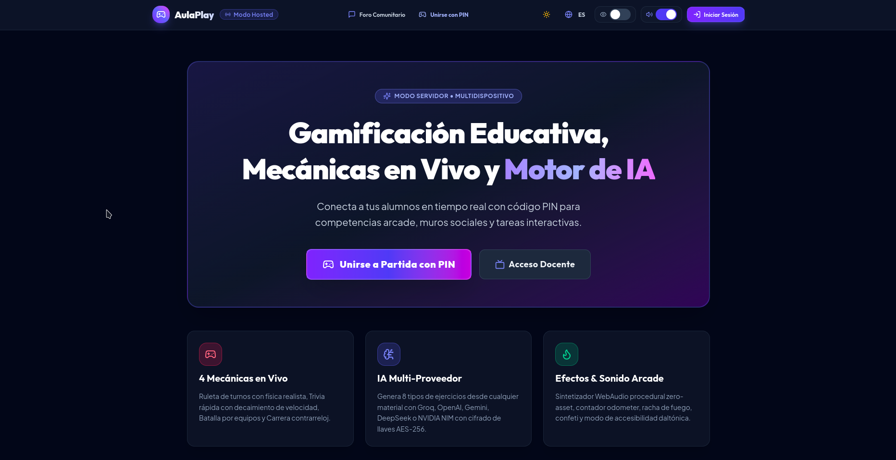
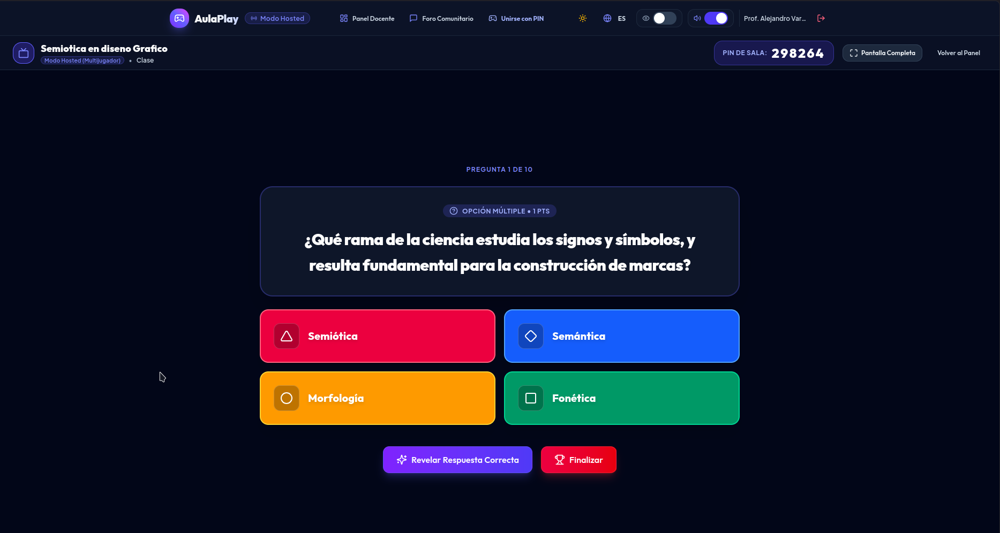
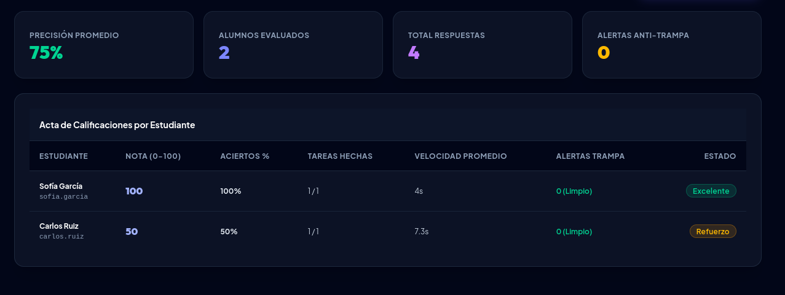
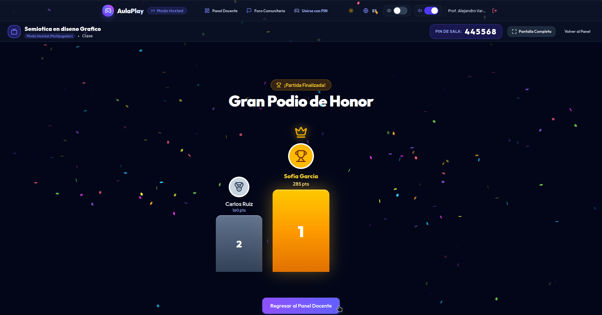
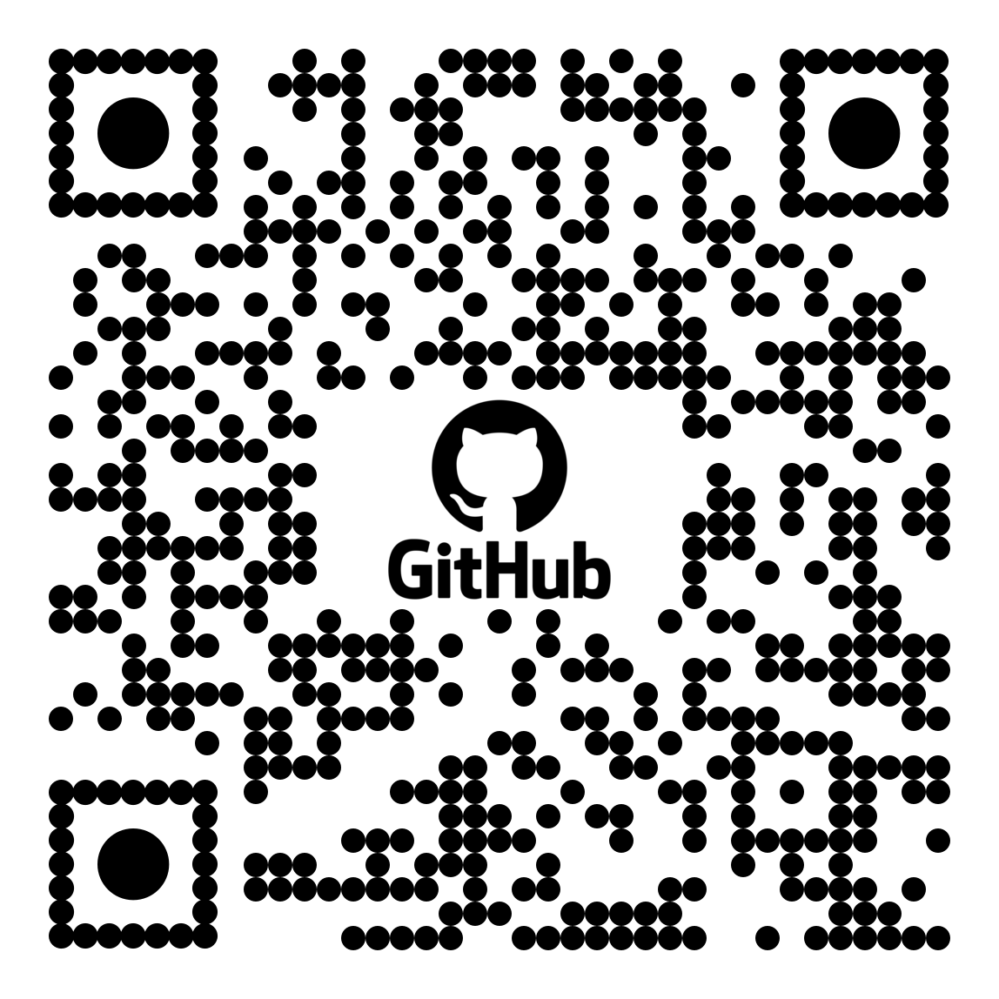

BridgeCode
sobre la plataforma interactiva AulaPlay
Estrategia de mediación pedagógica activa que transforma
el aula técnica en un entorno gamificado, autónomo y 100% offline.
Bun · Hono · SQLite · React 19 · Tailwind v4

Tres Barreras que Frenan el Aprendizaje Técnico
El aula técnica enfrenta un reto estructural que los métodos tradicionales no resuelven
Alta Abstracción Conceptual
El estudiante enfrenta lógica formal, sintaxis y algoritmos sin andamiaje previo. La brecha cognitiva se activa desde la primera clase y genera bloqueo inmediato.
Dependencia de Internet
Talleres paralizados ante microcortes de red. La infraestructura de conectividad en centros técnicos es inestable, y una caída puede interrumpir toda la clase.
Pasividad y Frustración
El método expositivo pasivo no da espacio al error productivo. El primer fallo desmotiva. Sin retroalimentación inmediata, el estudiante se desconecta y no regresa.
BridgeCode
Metodología de Mediación Activa
Problemas complejos se descomponen en micro-retos ejecutables. El estudiante avanza paso a paso sin el bloqueo del vacío cognitivo inicial.
Ante cada error, el sistema formula preguntas clave: «¿Por qué ocurrió y qué lógica aplicaste?» El error se convierte en aprendizaje consciente.
El docente nunca queda bloqueado. Puede crear ejercicios manualmente en cualquier momento, sin depender de IA ni conectividad.
AulaPlay
Entorno Gamificado Offline-First
Funciona en la intranet del laboratorio o en un solo equipo. Sin internet externo, sin servidores en la nube, sin costos de hosting.
Ruleta interactiva, batallas 1v1, retos asíncronos con ghost replay, podio en vivo, puntuación con cap anti-abuso y confeti de celebración.
Diagnóstico grupal en vivo. Generación automática de ejercicios compatible con OpenAI, Groq, DeepSeek, Google y cualquier API OpenAI-compatible.
Cómo Funciona la Sesión Formativa
Andamiaje cognitivo continuo articulando los tres saberes en un ciclo de mejora permanente
El docente presenta un problema real sin solución. Conflicto cognitivo que activa la curiosidad.
El alumno ejecuta micro-retos adaptativos con pistas progresivas. Error permitido y esperado.
AulaPlay indica aciertos y errores en tiempo real. Puntaje justo con bonificación por velocidad.
«¿Por qué ocurrió el error? ¿Qué lógica aplicaste para resolverlo?» Reflexión que consolida.
Comprensión profunda sin memorización pasiva de sintaxis
Micro-retos con retroalimentación inmediata en el taller
Confianza, tolerancia al error y pensamiento crítico
Formación aplicable, verificable y significativa
La Plataforma AulaPlay
Motor local, gamificado y adaptado al ritmo de cada estudiante
Acceso con PIN sin registro. Responde al ritmo del estudiante con feedback visual instantáneo.
Bun + SQLite WAL embebido. Un solo comando: ./dev.sh. Sin nube, sin servidor externo.
Mapa de calor de dificultades grupales. El docente ve exactamente dónde intervenir y quién necesita apoyo.
Compatible con OpenAI, Groq, DeepSeek, Google. Claves cifradas con AES-256. Modo manual siempre disponible.

AulaPlay en el Aula Real
Capturas reales del sistema funcionando en laboratorio con estudiantes técnicos

Sin cuenta, sin registro. El alumno ingresa el código y empieza de inmediato.

Resultados en vivo. El profesor ve el avance de cada estudiante al instante.

Reconocimiento motivacional en vivo. La gamificación cierra el ciclo de aprendizaje.
Resultados en el Aula
Evidencia de impacto medido en sesiones reales de laboratorio técnico
Resolución Autónoma
Incremento en la cantidad de estudiantes que completan retos prácticos de forma independiente durante el bloque horario, sin intervención directa del docente.
Continuidad Operativa
Cero interrupciones por fallas de conectividad. El sistema funciona con la red local del laboratorio. Una caída de internet no detiene la sesión formativa.
Tiempo Docente Liberado
Reducción de tareas mecánicas de calificación. El docente dedica ese tiempo a tutoría personalizada, andamiaje directo y retroalimentación formativa de calidad.
Un Motor para Toda la Formación Técnica
BridgeCode es la estrategia para programación · AulaPlay escala a cualquier especialidad sin reescribir una sola línea
Código abierto.
Listo para tu aula.
AulaPlay es una solución libre, autoalojada y lista para usar. Explora el código fuente, descarga, instala y adapta la plataforma a tu institución sin ningún costo de licenciamiento.
github.com/nelson330/BridgeCode-v2
¡Muchas gracias por su atención!
